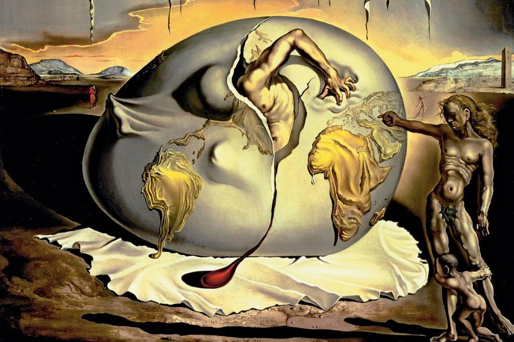

Bioetica
Qui potrete trovare i principali contenuti delle varie edizioni del convegno. Si tratta degli abstract o delle relazioni relative agli argomenti trattati. E' possibile scaricare i file o leggerli senza scaricarli.
.jpg)
Scarica gli abstracts dei dottori per questa annata.
Scarica Abstract del Dott. PancaniScarica Abstract del Dott. Bertucci
Scarica Abstract del Dott. Bo
Scarica Abstract del Dott. Castenetto
Scarica Abstract del Dott. Cavallo
Scarica Abstract del Dott. Centini
Scarica Abstract del Dott. Costantini
Scarica Abstract del Dott. Gulino

Scarica gli abstracts dei dottori per questa annata.
Scarica Abstract del Dott. BodoniScarica Abstract del Dott. Rossi
Scarica Abstract del Dott. Bo
Scarica Abstract del Dott. Simonato
Scarica Abstract del Dott. Cavallo
Scarica Abstract del Dott. Centini

Nessun materiale reperibile per questa annata...

Scarica gli abstracts dei dottori per questa annata.
Scarica Abstract del Dott. DebernardiScarica Abstract del Dott. Englaro
Scarica Abstract del Dott. Nicotra
Scarica Abstract del Dott. Secreto
Scarica Abstract del Dott. Zeppegno
Scarica Abstract del Dott. Bergamaschi
Scarica Abstract del Dott. Bertucci
Scarica Abstract del Dott. Bottigliengo
Scarica Abstract del Dott. Leone
Scarica Abstract del Dott. Panetta
Scarica Abstract del Dott. Centini

Scarica gli abstracts dei dottori per questa annata.
Scarica Abstract del Dott. OrlandellaScarica Abstract del Dott. Zeppegno
Scarica Abstract del Dott. Boggio
Scarica Abstract del Dott. Fusco
Scarica Abstract del Dott. Gambassi
Scarica Abstract del Dott. Mosso
Scarica Abstract del Dott. Soma'
Scarica Abstract del Dott. Centini